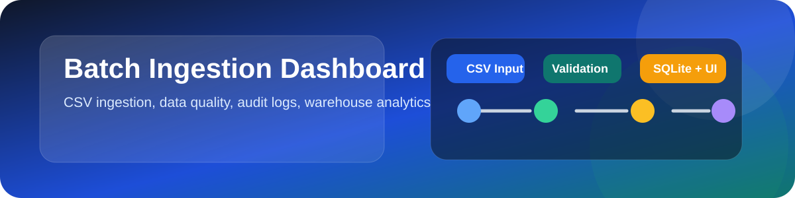
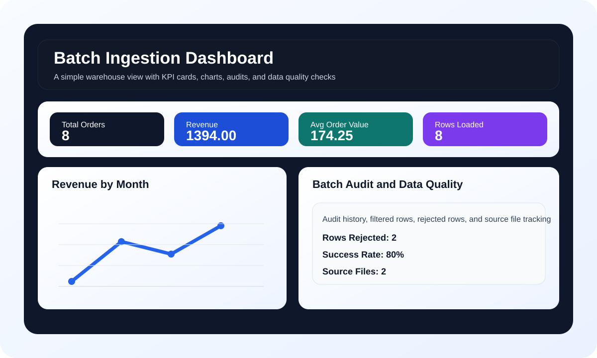

SAP Project - Batch Ingestion Dashboard is a portfolio-ready data engineering system that ingests CSV files, validates and cleans them, loads curated records into SQLite, and presents operational and analytical insights through a Streamlit dashboard.
Small businesses and student demo datasets often start as scattered CSV files with inconsistent formatting, missing values, and no audit trail. This makes it difficult to trust the data, summarize it, or present it in a useful way. The challenge was to build a compact but realistic batch pipeline that can process such raw files, reject invalid rows, store clean data safely, and display the final output in a professional dashboard.


The project has a root-level launcher, badges, architecture doc, and visual assets that make the repository look polished and complete.
Every file load is recorded, which makes it easy to explain what happened during each batch run.
The dashboard does not just display data; it shows trends, quality checks, and filtered views that resemble a real business tool.
This project demonstrates a complete mini data engineering workflow: ingestion, validation, transformation, storage, audit logging, and presentation. It is intentionally lightweight so it can run on a student laptop, but it still shows the structure and discipline of a real production-style analytics solution.
Prepared for academic submission and portfolio presentation.